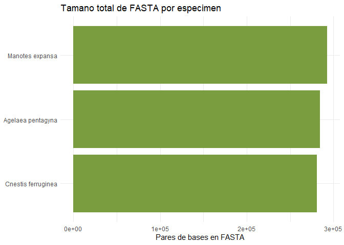
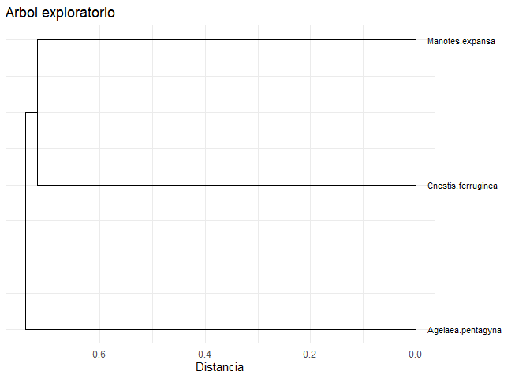
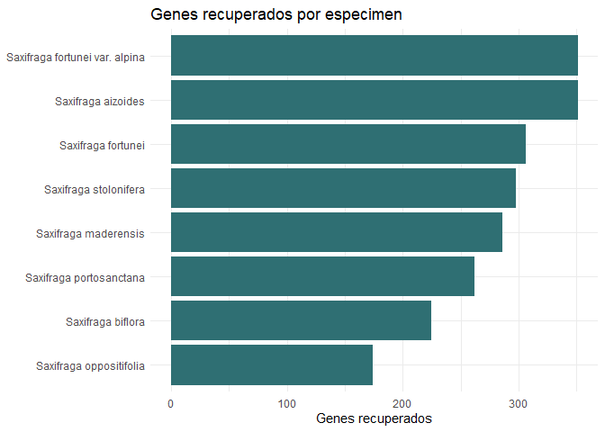

rtreeoflife provides programmatic access to species records and selected FASTA files associated with the Royal Botanic Gardens, Kew Tree of Life Explorer. The package is designed for selective access: users search or match species first, then download only the FASTA files needed for an analysis.
The package includes tol_species, a normalized species/specimen index derived from the Tree of Life species list. This makes common searches available without mirroring the full Kew release locally.
Installation
Install the released version from CRAN with:
install.packages("rtreeoflife")Install the development version from GitHub with:
pak::pak("PaulESantos/rtreeoflife")Data Access Model
Kew release files are hosted at:
library(rtreeoflife)
#> ── Attaching rtreeoflife ────────────────────────────────── rtreeoflife 0.1.0 ──
#> ✔ species index tol_species_index(), tol_match_species()
#> ✔ selective download tol_download_fasta(), tol_export_fasta()
#> ✔ tidy FASTA tol_attach_fasta(), tol_fasta_long()
#> ✔ visualisation tol_plot_gene_recovery(), tol_plot_tree()
#> ℹ Data source: <https://treeoflife.kew.org/> and <https://sftp.kew.org/pub/treeoflife/current_release/>
tol_release_url()
#> [1] "https://sftp.kew.org/pub/treeoflife/current_release/"The full release contains manifests, tree files, rendered tree assets, and many FASTA files. Downloading the complete repository can be slow and storage intensive, so the recommended workflow is:
- Search or match species in the bundled index.
- Resolve FASTA URLs for the selected records.
- Download to a temporary session directory.
- Manipulate the parsed FASTA data as tidy list-columns.
- Export FASTA files permanently only when needed.
Example
This example searches three species, downloads only the available FASTA files, summarises the recovered sequences, visualises the result with ggplot2, builds an exploratory tree for one shared gene, and exports FASTA files when the user decides to keep them.
library(dplyr)
#>
#> Adjuntando el paquete: 'dplyr'
#> The following objects are masked from 'package:stats':
#>
#> filter, lag
#> The following objects are masked from 'package:base':
#>
#> intersect, setdiff, setequal, union
library(ggplot2)
targets <- c(
"Cnestis ferruginea",
"Agelaea pentagyna",
"Manotes expansa"
)
# Search the bundled species index.
matches <- tol_match_species(
targets,
multiple = "best"
)
matches |>
select(
requested_name,
matched_name,
match_type,
has_data,
sequence_id,
no_of_genes_recovered,
fasta_file_url
)
#> # A tibble: 3 × 7
#> requested_name matched_name match_type has_data sequence_id
#> <chr> <chr> <chr> <lgl> <int>
#> 1 Cnestis ferruginea Cnestis ferruginea exact TRUE 5320
#> 2 Agelaea pentagyna Agelaea pentagyna exact TRUE 5323
#> 3 Manotes expansa Manotes expansa exact TRUE 5325
#> # ℹ 2 more variables: no_of_genes_recovered <int>, fasta_file_url <chr>
# Keep only records with FASTA availability.
selected <- matches |>
filter(has_data)
# Download selected FASTA files to a temporary directory.
# Increase timeout/retries for slow network connections.
download_plan <- tol_download_fasta(
selected,
timeout = 1200,
retries = 5
)
#> Descargando Cnestis ferruginea: INSDC.ERR5034759.Cnestis_ferruginea.a353.fasta
#> Descargando Agelaea pentagyna: INSDC.ERR5033663.Agelaea_pentagyna.a353.fasta
#> Descargando Manotes expansa: INSDC.ERR5034760.Manotes_expansa.a353.fasta
# Parse FASTA files into a tidy list-column.
plan_nested <- download_plan |>
tol_attach_fasta()
# Convert nested FASTA records to long tidy data.
fasta_long <- plan_nested |>
tol_fasta_long()
fasta_long |>
select(sequence_id, scientific_name, gene_id, width)
#> # A tibble: 1,046 × 4
#> sequence_id scientific_name gene_id width
#> <int> <chr> <chr> <int>
#> 1 5320 Cnestis ferruginea 4471 1122
#> 2 5320 Cnestis ferruginea 4527 1287
#> 3 5320 Cnestis ferruginea 4691 471
#> 4 5320 Cnestis ferruginea 4724 678
#> 5 5320 Cnestis ferruginea 4744 489
#> 6 5320 Cnestis ferruginea 4757 579
#> 7 5320 Cnestis ferruginea 4793 1833
#> 8 5320 Cnestis ferruginea 4796 870
#> 9 5320 Cnestis ferruginea 4802 963
#> 10 5320 Cnestis ferruginea 4806 612
#> # ℹ 1,036 more rows
# Summarise and plot recovered FASTA content.
fasta_summary <- plan_nested |>
tol_fasta_summary()
tol_plot_fasta_summary(fasta_summary)
# Identify shared genes and build an exploratory tree.
common_genes <- plan_nested |>
tol_common_genes(min_records = 2)
tree_result <- plan_nested |>
tol_build_gene_tree(
gene_id = common_genes$gene_id[[1]],
min_records = 2
)
tol_plot_tree(tree_result)
# Export FASTA files permanently only if they should be retained.
exported <- download_plan |>
tol_export_fasta(
dest_dir = "raw-data/fasta/by_recovery",
manifest_path = "raw-data/fasta/fasta_export_manifest.csv",
overwrite = FALSE
)
exported |>
select(scientific_name, local_path, export_status)
#> # A tibble: 3 × 3
#> scientific_name local_path export_status
#> <chr> <chr> <chr>
#> 1 Cnestis ferruginea D:/rtreeoflife/raw-data/fasta/by_recovery/IN… ok
#> 2 Agelaea pentagyna D:/rtreeoflife/raw-data/fasta/by_recovery/IN… ok
#> 3 Manotes expansa D:/rtreeoflife/raw-data/fasta/by_recovery/IN… okSpecies Search
Use exact taxonomic filters when the target group is known:
saxifraga <- tol_search_species(
genus = "Saxifraga"
)
tol_plot_gene_recovery(saxifraga)
Use tol_match_species() when starting from a vector of scientific names:
tol_match_species(
c("Cnestis ferruginea", "Agelaea pentagyna", "Manotes expansa"),
multiple = "best"
)
#> # A tibble: 3 × 22
#> requested_name request_order matched_name match_type match_distance has_data
#> <chr> <int> <chr> <chr> <int> <lgl>
#> 1 Cnestis ferrugi… 1 Cnestis fer… exact 0 TRUE
#> 2 Agelaea pentagy… 2 Agelaea pen… exact 0 TRUE
#> 3 Manotes expansa 3 Manotes exp… exact 0 TRUE
#> # ℹ 16 more variables: sequence_id <int>, data_source <chr>, order <chr>,
#> # family <chr>, genus <chr>, specific_epithet <chr>,
#> # specimen_reference <chr>, specimen_barcode <chr>, collection_date <int>,
#> # country_of_origin <chr>, material_sampled <chr>,
#> # no_of_genes_recovered <int>, no_of_bp_recovered <int>,
#> # fasta_file_url <chr>, scientific_name <chr>, fasta_file_name <chr>Persistent Downloads
By default, tol_download_fasta() stores files in a temporary session directory. This keeps exploratory workflows lightweight:
plan <- tol_download_fasta(
genus = "Saxifraga",
specific_epithet = "fortunei"
)
#> Descargando Saxifraga fortunei: INSDC.ERR5006173.Saxifraga_fortunei.a353.fasta
plan |>
tol_attach_fasta()
#> # A tibble: 1 × 11
#> sequence_id scientific_name order family genus specific_epithet fasta_file_url
#> <int> <chr> <chr> <chr> <chr> <chr> <chr>
#> 1 224 Saxifraga fort… Saxi… Saxif… Saxi… fortunei https://sftp.…
#> # ℹ 4 more variables: fasta_file_name <chr>, local_path <chr>, status <chr>,
#> # fasta <list>To keep files permanently, use tol_export_fasta():
plan |>
tol_export_fasta(
dest_dir = "raw-data/fasta/by_recovery"
)Release Utilities
Lower level helpers are available for metadata and small scoped downloads:
tol_known_bundles()
#> bundle path
#> 1 manifests sequence_manifest.txt
#> 2 manifests deleted_sequences.txt
#> 3 manifests specimen_manifest.txt
#> 4 manifests revised_specimen_nomenclature.txt
#> 5 manifests gene_manifest.txt
#> 6 species_tree tree/species/treeoflife.current.tree
#> 7 species_tree_support tree/species/treeoflife.all_support_values.current.tree
manifest_files <- tol_download_bundle("manifests")
species_tree <- tol_download_bundle("species_tree")
sequence_manifest <- tol_manifest(manifest_files[[1]])For ordinary FASTA access, prefer the species-index workflow above instead of downloading complete release directories.
Citation
To cite the package and the original Kew Tree of Life Explorer data source, use:
citation("rtreeoflife")
#> To cite rtreeoflife and associated Kew Tree of Life Explorer data,
#> please use:
#>
#> Santos Andrade, P. E. (2026). rtreeoflife: Access Kew Tree of Life
#> Data Releases. R package version 0.1.0.
#> https://github.com/PaulESantos/rtreeoflife
#>
#> The species records, FASTA files, and trees accessed by this package
#> are provided by the Royal Botanic Gardens, Kew Tree of Life Explorer.
#> When using Kew Tree of Life Explorer data, cite the original
#> publication and indicate the data release used.
#>
#> To cite the original Kew Tree of Life Explorer data and trees, please
#> use:
#>
#> Baker, W. J., Bailey, P., Barber, V., Barker, A., Bellot, S., Bishop,
#> D., Botigue, L. R., Brewer, G., Carruthers, T., Clarkson, J. J.,
#> Cook, J., Cowan, R. S., Dodsworth, S., Epitawalage, N., Francoso, E.,
#> Gallego, B., Johnson, M., Kim, J. T., Leempoel, K., Maurin, O.,
#> McGinnie, C., Pokorny, L., Roy, S., Stone, M., Toledo, E., Wickett,
#> N. J., Zuntini, A. R., Eiserhardt, W. L., Kersey, P. J., Leitch, I.
#> J., and Forest, F. (2022). A Comprehensive Phylogenomic Platform for
#> Exploring the Angiosperm Tree of Life. Systematic Biology, 71,
#> 301-319. doi:10.1093/sysbio/syab035
#>
#> To see these entries in BibTeX format, use 'print(<citation>,
#> bibtex=TRUE)', 'toBibtex(.)', or set
#> 'options(citation.bibtex.max=999)'.When using Kew Tree of Life Explorer data, cite the original publication and indicate the data release used in the analysis.